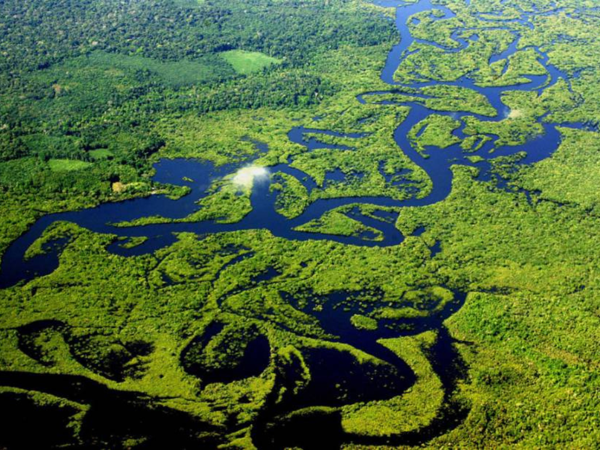

O estado do Amazonas, localizado na região Norte do Brasil, é o maior estado brasileiro em extensão territorial e abriga grande parte da Floresta Amazônica, considerada a maior floresta tropical do mundo. Sua capital, Manaus, destaca-se como importante centro econômico e cultural da região, especialmente pela Zona Franca de Manaus, que impulsiona a indústria e o comércio. O Amazonas possui enorme biodiversidade, com rios extensos como o Rio Amazonas, além de rica cultura indígena e tradições regionais marcadas pelo folclore, pela culinária típica e pelas manifestações culturais amazônicas. O turismo ecológico também tem grande importância no estado, atraindo visitantes interessados em conhecer a natureza exuberante e a vida selvagem da região.
